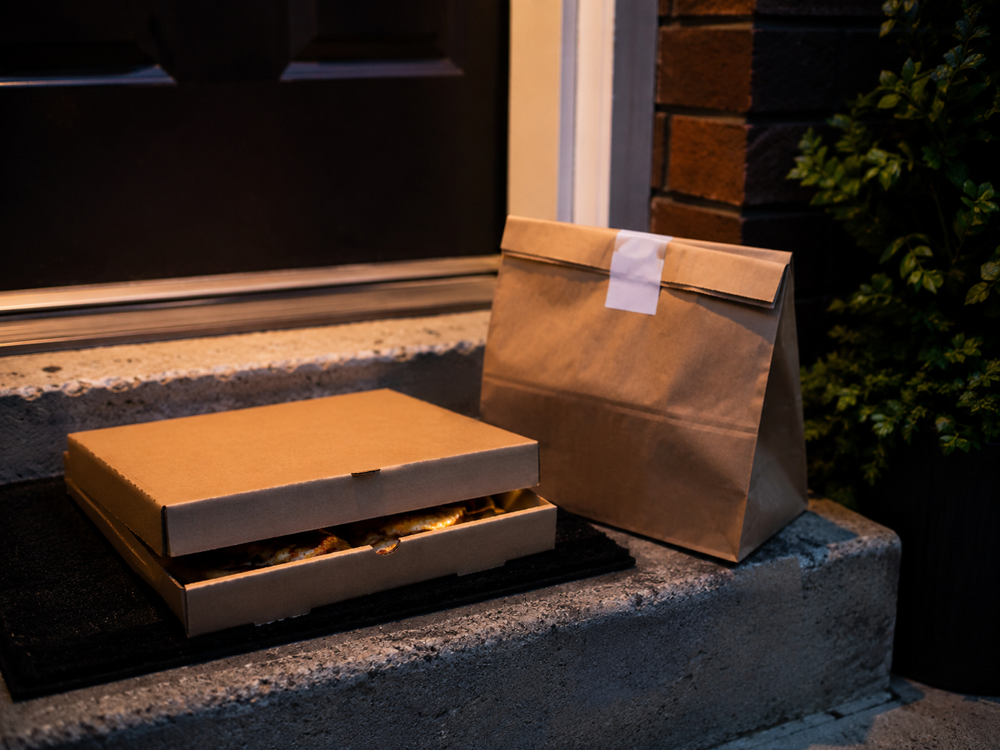

Your screen
Order placed
You leave the app open.
Dinner is supposed to be simple now.
Audio layer
This site uses a continuous soundscape that slowly builds pressure through tracking, checking, pause, and delay. It also includes brief flashing and shaking interface effects during the most anxious moment.
Dinner order
Waiting at home
Live delivery order
Order status
The restaurant has your order. You keep the page open while dinner moves from kitchen to doorstep.

Pizza order in progress
Driver is on the way
Status
Current read
The wait is still quiet.
System note
Nothing feels urgent yet.
Your order is open
You have not started checking yet.

Delivered
Your screen
You leave the app open.
Dinner is supposed to be simple now.
You look
Now there is something to watch.
The dot starts moving.
You return
The screen rewards the glance.
A tiny update feels like progress.
You refresh
The app moves. The wait does not.
You keep the screen awake.
You wait
Every refresh repeats the same answer.
More updates. Less calm.
You notice
You stare because it stopped.
No movement. Screen still active.
The app answers
You know more. You control nothing.
The screen gives information, not relief.
Too much information
The app keeps answering. None of it calms you.
More signals. More pressure.
At your door
You close the app, but not immediately.
Delivered. Still checking.
Reflection
You saw more, but settled less.
Delay became clearer on screen, but harder to settle in the mind.